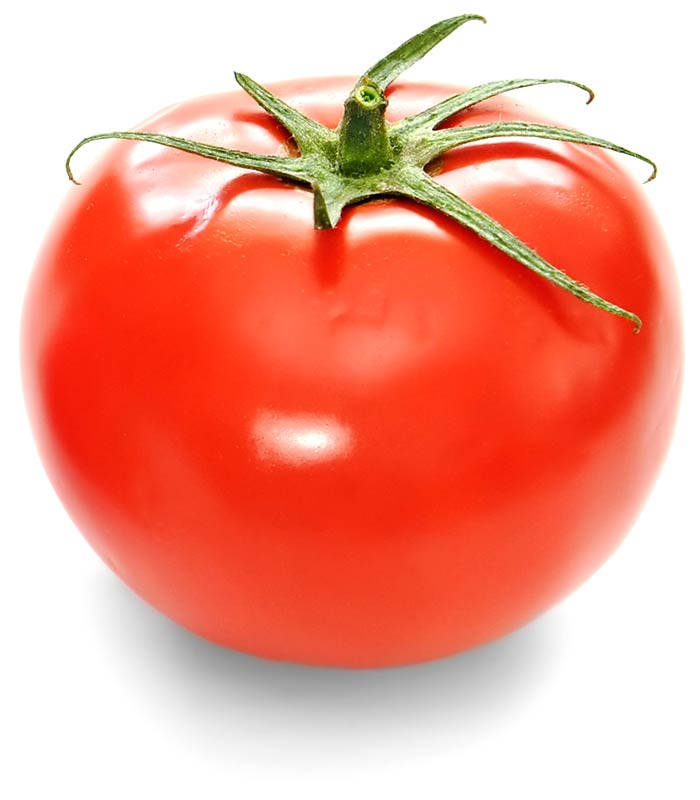

Tomato
The tomato (see pronunciation) is the edible, often red berry-type fruit of the nightshade Solanum lycopersicum, commonly known as a tomato plant. The tomato is consumed in diverse ways, including raw, as an ingredient in many dishes, sauces, salads, and drinks.
The English word tomato comes from the Spanish word, tomate, derived from the Nahuatl (Aztec language) word tomatl. It first appeared in print in 1595.
The tomato belongs to the nightshade family, Solanaceae. The species originated in Central and South America and its use as a food originated in Mexico, and spread throughout the world following the Spanish colonization of the Americas. Its many varieties are now widely grown, sometimes in greenhouses in cooler climates. The plants typically grow to 1–3 meters (3–10 ft) in height and have a weak stem that often sprawls over the ground and vines over other plants. It is a perennial in its native habitat, although often grown outdoors in temperate climates as an annual. An average common tomato weighs approximately 100 grams (4 oz).
While tomatoes are botanically and scientifically the berry-type fruits of the tomato plant, they can also be considered a culinary vegetable, causing some confusion.
The tomato is native to western South America and Central America. Native versions were small, like cherry tomatoes, and most likely yellow rather than red. A member of the deadly nightshade family, tomatoes were erroneously thought to be poisonous by Europeans who were suspicious of their bright, shiny fruit. (The leaves are in fact poisonous, although the fruit is not.)
Aztecs and other peoples in Mesoamerica used the fruit in their cooking. The exact date of domestication is unknown: by 500 BC, it was already being cultivated in southern Mexico and probably other areas. The Pueblo people are thought to have believed that those who witnessed the ingestion of tomato seeds were blessed with powers of divination. The large, lumpy variety of tomato, a mutation from a smoother, smaller fruit, originated in Mesoamerica, and may be the direct ancestor of some modern cultivated tomatoes.